Tích hợp Bitrix24
Bitrix24 là một nền tảng CRM miễn phí mạnh mẽ được nhiều doanh nghiệp Việt Nam sử dụng. Khi tích hợp Bitrix24 vào AhaChat thì bạn có thể:
Lưu Lead/Deal/Contact gồm số điện thoại, họ tên liên lạc, email hay bất cứ thông tin nào bạn muốn từ chatbot lên Bitrix24.
Gửi kịch bản chăm sóc đến khách hàng mỗi khi Lead/Deal thay đổi trạng thái. Chú ý nếu bạn không muốn gửi kịch bản đến khách hàng thì bỏ qua bước tạo Outbound webhook trên Bitrix24 nhé.
Chú ý là bạn phải đăng ký trên bitrix24.com mới tích hợp được AhaChat chứ không được dùng bitrix24.vn nhé :(
1. Cài đặt Bitrix24 trước khi tích hợp vào AhaChat
1.1 Đăng nhập vào Bitrix24 Chọn CRM và Đăng ký 1 link CRM
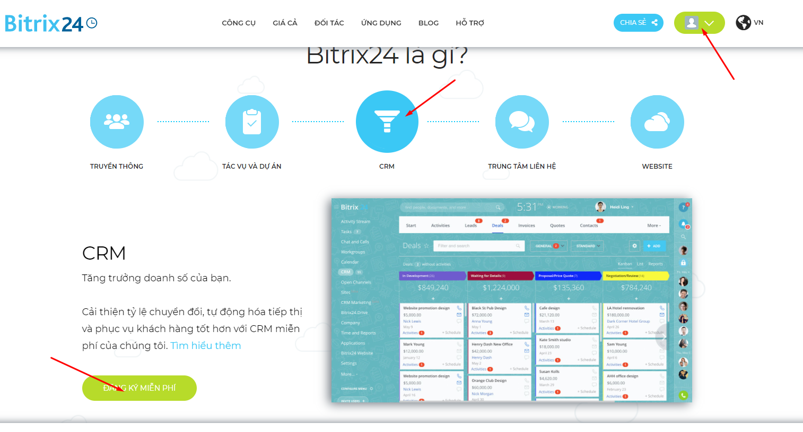
1.2 Mở liên kết CRM đã tạo
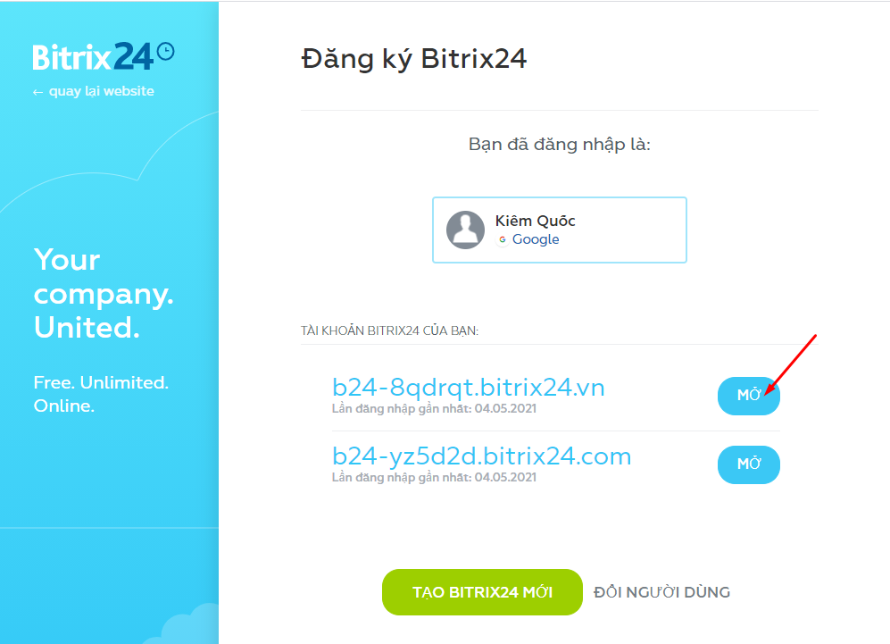
1.3 Chọn xem thêm và chọn tài nguyên cho nhà phát triển
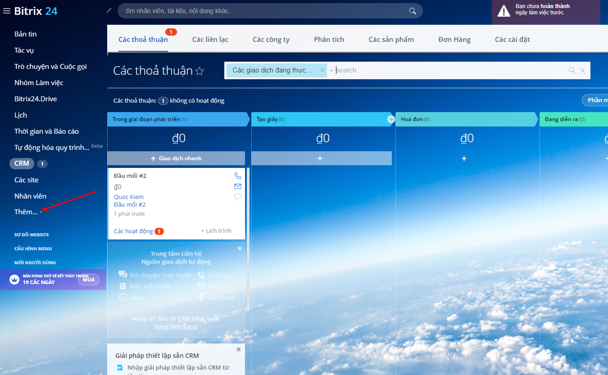
1.4 Chọn mục Other
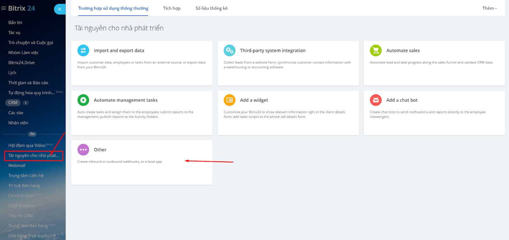
1.5 Tạo Inbound Webhook
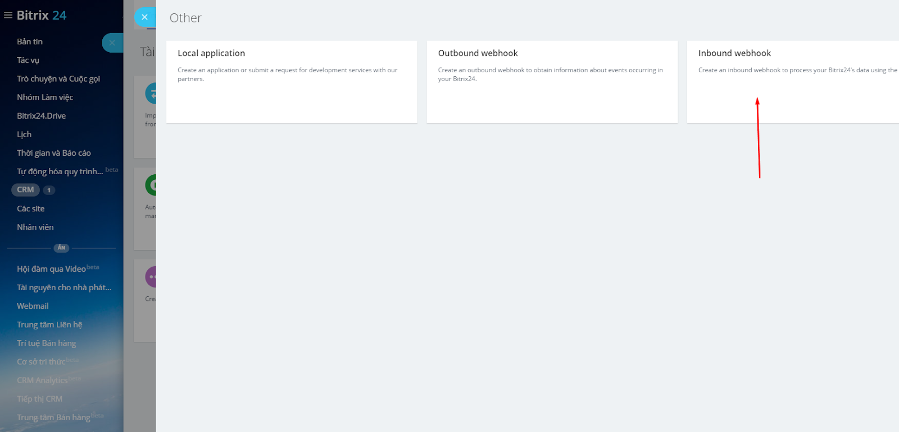
1.6 Cấp quyền truy cập là CRM > Bấm Lưu và copy link có đuôi .json
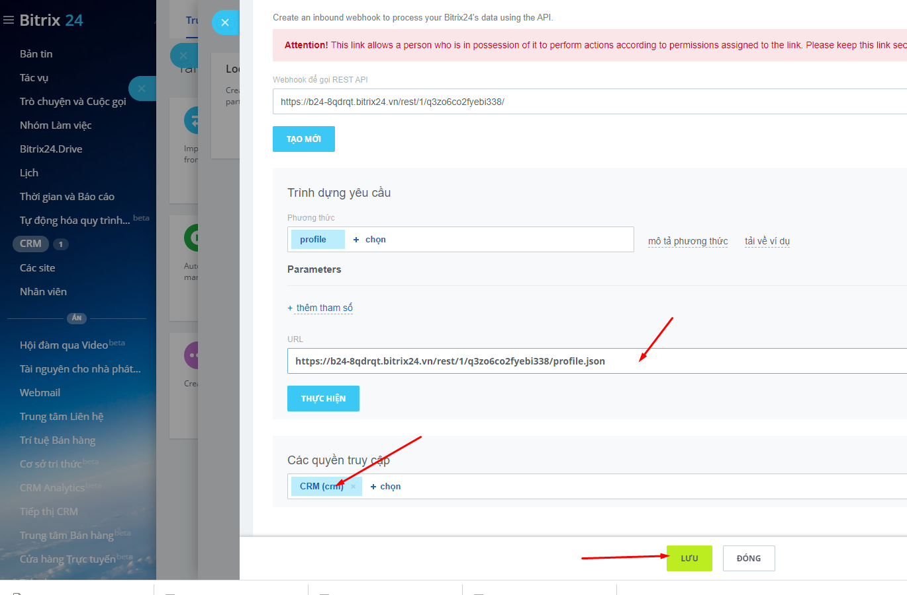
Như vậy ta đã phần cài đặt bên Bitrix24 để chuẩn bị tích hợp vào AhaChat.
2. Tích hợp Inbound webhook của Bitrix24 để Lưu Lead/Deal/Contact vào AhaChat
2.1 Vào menu Cài đặt > Tích hợp > CRM Bitrix24 dán link có đuôi .json ở trên vào và bấm lưu
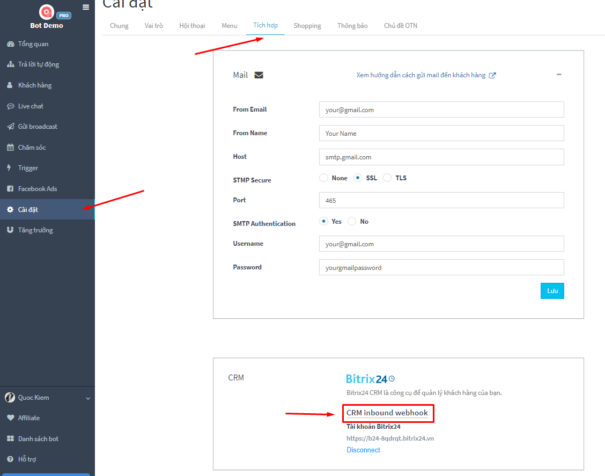
2.2 Tạo kịch bản, block TÍCH HỢP CRM > BITRIX24
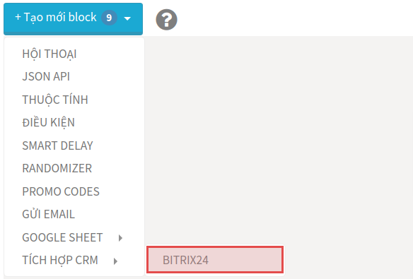
2.3 Nếu muốn Lưu thì chọn Lưu, nếu muốn Lấy thông tin từ Bitrix24 về AhaChat thì chọn Lấy
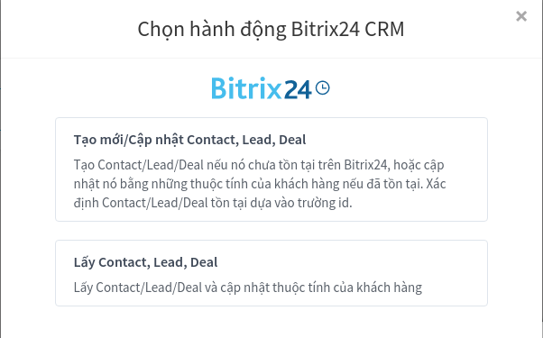
2.4 Trong ví dụ này là muốn lưu Lead, bạn có thể bất kỳ thuộc tính nào bạn muốn để lưu lên Bitrix24
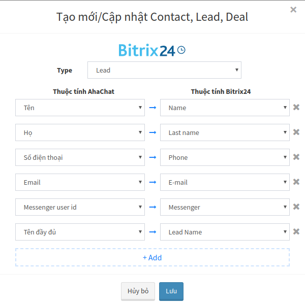
2.5 Sau khi khách hàng cung cấp thông tin trên AhaChat sẽ lưu vào Bitrix24 với kết quả bên dưới
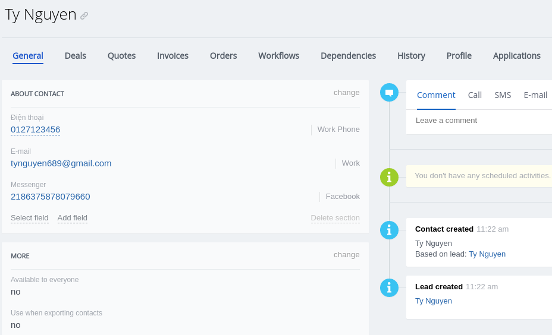
3. Tích hợp Outbound webhook của AhaChat để Gửi kịch bản chăm sóc khi Lead/Deal/Contact thay đổi trạng thái trên Bitrix24
Chú ý: Nếu bạn không muốn gửi kịch bản đến khách hàng khi cập nhật Lead/Deal/Contact thì bỏ qua bước này.
3.1 Copy link outbound từ AhaChat
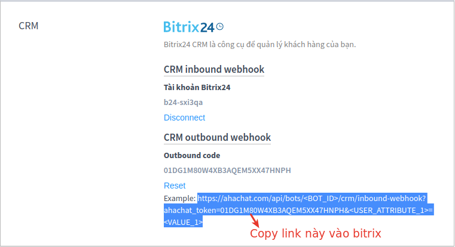
3.2 Thay <BOT_ID> bằng bot id của kịch bản, cứ bấm vào kịch bản và nhìn lên thanh url bạn sẽ thấy id này. Bỏ qua <USER_ATTRIBUTE_1>=<VALUE_1> nếu như bạn không muốn lưu thuộc tính vào khách hàng.
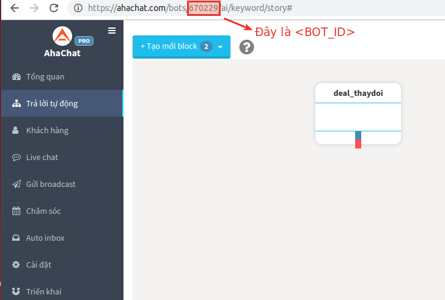
3.3 Copy link sau khi đã thay <BOT_ID> vào Outbound của Bitrix24.
Ví dụ link cần copy là: https://ahachat.com/api/bots/722946/crm/inbound-webhook?ahachat_token=01DG1M80W4XB3AQEM5XX47HNPX
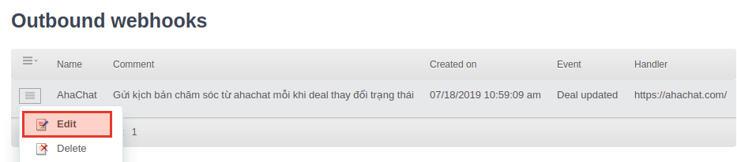
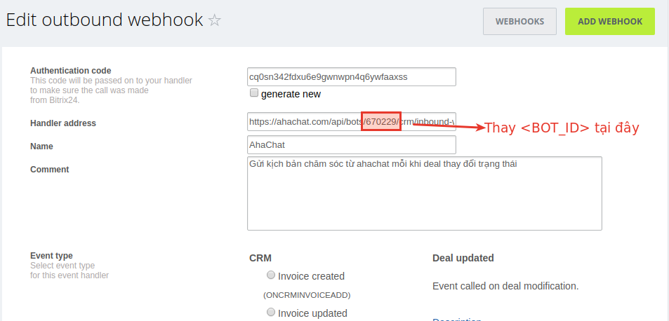
3.4 Vào Bitrix24 và thử cập nhật trạng thái của Deal
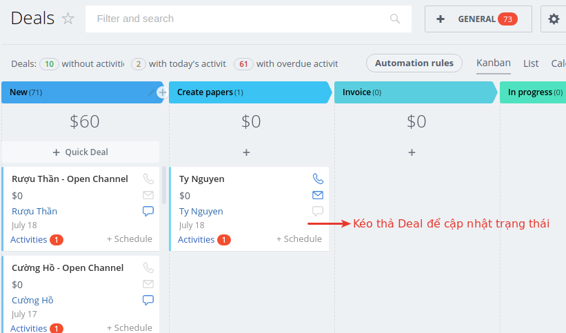
3.5 Sau khi thay đổi trạng thái Deal của khách hàng, quay lại Messenger để thấy một kịch bản được gửi về
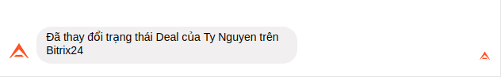
Bạn có bất kỳ câu hỏi nào liên quan đến tích hợp Bitrix24 trong AhaChat? Bạn muốn khởi chạy chiến dịch tiếp cận khách hàng của mình bằng Chatbot với một số lời khuyên chuyên môn từ Đối tác tiếp thị của Facebook? Đừng ngần ngại liên hệ với chúng tôi để có câu trả lời nhanh nhất và hiệu quả nhất! Tận hưởng công cụ chatbot miễn phí của chúng tôi mà không cần phải trả bất kỳ chi phí nào!